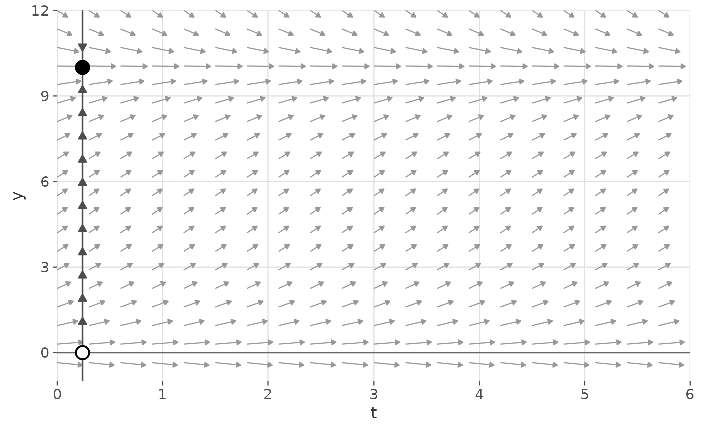
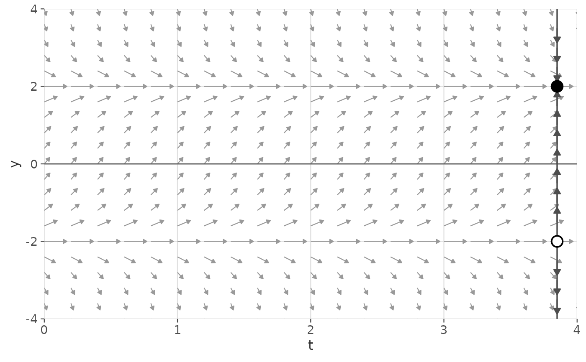

Computes and adds a one-dimensional phase line to an existing
ggplot2::ggplot() object. The phase line is drawn as a vertical
line at the left or right edge of the plot (controlled by
line_x_position), cleanly separated from the flow field arrows in the
plot interior. It consists of:
A vertical reference line at
line_x_positionUpward/downward arrows showing the sign of \(dy/dt\)
Filled circles at stable (attracting) equilibria
Open circles at unstable (repelling) equilibria
Diamond symbols at semi-stable equilibria
Usage
gg_phase_portrait(
deriv,
ylim,
xlim = c(0, 1),
parameters = NULL,
line_x_position = NULL,
n_arrows = 15L,
n_search = 500L,
arrow_color = "grey30",
arrow_size = 0.4,
arrow_length_scale = 0.7,
stable_color = "black",
unstable_fill = "white",
eq_size = 4,
eq_stroke = 1,
line_color = "grey30",
line_linewidth = 0.6
)Arguments
- deriv
A function describing the 1D ODE system, in Convention A or B. See ggphasr for details.
- ylim
Numeric vector of length 2. Range of the y-axis (state variable). Should match the
ylimof the parent plot.- xlim
Numeric vector of length 2. Range of the x-axis. Should match the
xlimof the parent plot. Default:c(0, 1).- parameters
Parameter vector or list passed to
deriv.- line_x_position
Numeric or
NULL. x-coordinate at which the vertical phase line is drawn. IfNULL(default), placed at the left edge:xlim[1] + 0.04 * diff(xlim).- n_arrows
Integer. Number of directional arrows along the phase line. Default:
15.- n_search
Integer. Grid resolution for equilibrium detection. Default:
500.- arrow_color
Character. Color of the directional arrows. Default:
"grey30".- arrow_size
Numeric. Size of arrow heads in lines. Default:
0.4.- arrow_length_scale
Numeric in (0, 1]. Arrow length as a fraction of the y-range divided by
n_arrows. Default:0.7.- stable_color
Character. Fill color for stable equilibria. Default:
"black".- unstable_fill
Character. Fill color for unstable equilibria. Default:
"white".- eq_size
Numeric. Size of equilibrium points. Default:
4.- eq_stroke
Numeric. Border width of equilibrium points. Default:
1.- line_color
Character. Color of the vertical phase line. Default:
"grey30".- line_linewidth
Numeric. Width of the phase line. Default:
0.6.
Value
A list of ggplot2 layer objects. Add to a ggplot with +.
Examples
# Logistic growth: stable equilibrium at K = 10, unstable at y = 0
gg_flow_field(
ode_logistic,
xlim = c(0, 6), ylim = c(-1, 12),
system = "one.dim", parameters = c(r = 1, K = 10)
) +
gg_phase_portrait(
ode_logistic,
ylim = c(-1, 12), xlim = c(0, 6),
parameters = c(r = 1, K = 10)
)

# Place phase line on the right edge instead
gg_flow_field(
ode_example_01,
xlim = c(0, 4), ylim = c(-4, 4),
system = "one.dim"
) +
gg_phase_portrait(
ode_example_01,
ylim = c(-4, 4), xlim = c(0, 4),
line_x_position = 3.85
)
